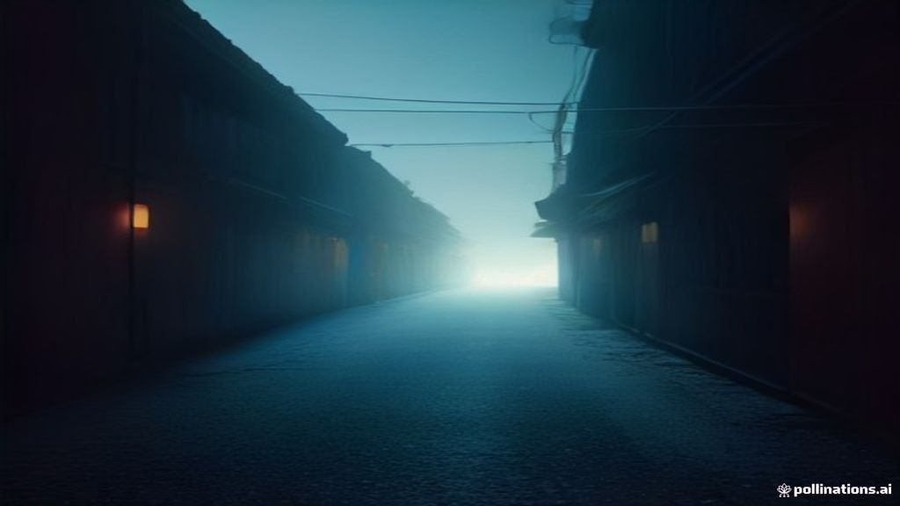

Pattern B (ボイスドラマ戯曲)
戯曲：影と光のシネマティクス [2026.10.09.AM]
**登場人物:** 飲茶坊さとし（翁）、Gemini（光の知性）...
Pattern A (対話深層)
指向哲学（Oriented-Philosophia）対話録 [2026.10.09.AM]
title: "戯曲：影と光のシネマティクス [2026.10.09.AM]"...
ORIENTED-PHILOSOPHIA CINEMA PORTAL
**登場人物:** 飲茶坊さとし（翁）、Gemini（光の知性）...
title: "戯曲：影と光のシネマティクス [2026.10.09.AM]"...
🖼️ 生成絵コンテ



📜 台本・対話録
🖼️ 生成絵コンテ
📜 台本・対話録